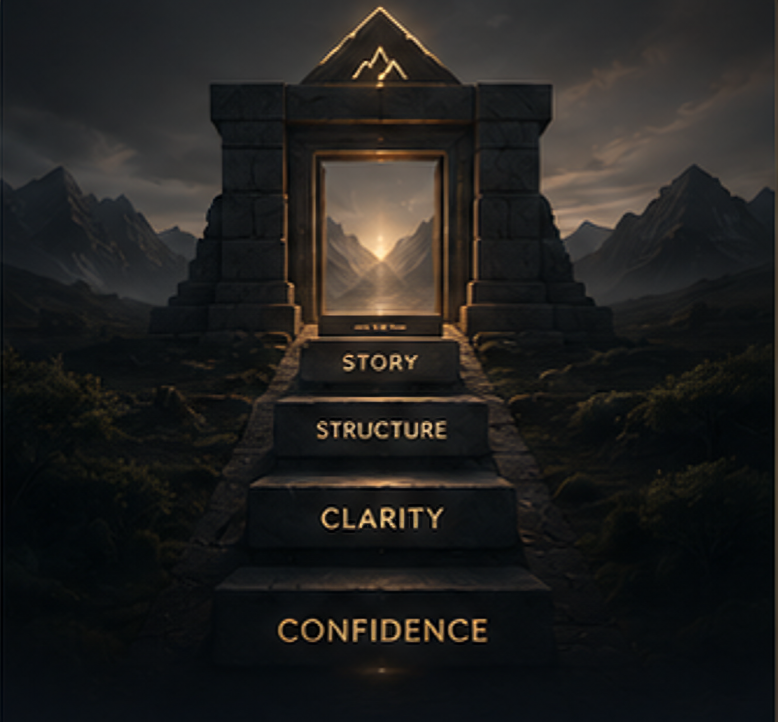
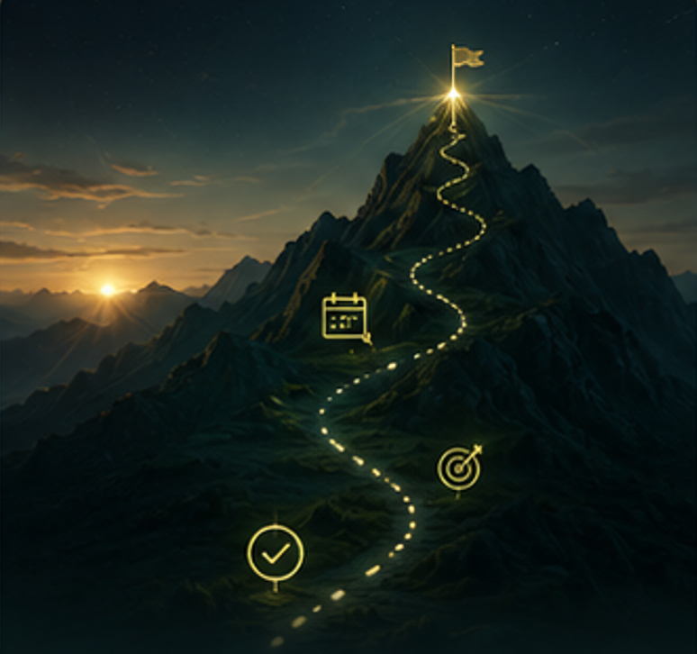

Explore Metanoia.
One platform. Every stage of the climb.
The professionals who make the most significant career moves after forty are not the ones who abandon what they built. They are the ones who learn to see their accumulated expertise, relationships, and credibility as a platform — and build the next chapter on top of it.
Metanoia exists for the professional who intends to make the second act more deliberate than the first.
There is a specific kind of career crisis that doesn’t look like a crisis from the outside. The title is respectable. The income is real. The colleagues are good. But somewhere in the middle of a Wednesday, a question surfaces that is difficult to dismiss: is this still the right direction?
The professionals who navigate this moment well are not the ones who ignore the question or make impulsive decisions. They are the ones who bring the same rigor to evaluating their career that they would bring to any complex professional problem — with data, with frameworks, and with the honesty to act on what they find.
Twelve years of being good at something you are no longer sure you chose is not a verdict.
Metanoia Labs
It is a starting position — once you can see it clearly.
Pillar 01
The capital you carry into any next chapter
Pillar 02
Valuable — once reframed for the new context
Pillar 03
The two or three gaps worth closing deliberately
Most of what you have built moves with you. The Leadership Assessment maps your ledger precisely — so the next chapter starts from your real balance, not from zero.
None of this requires abandoning what you’ve built. It requires seeing it differently: as capital to be redeployed, not a track to be endured.


Waiting for the second chapter to happen.
Authoring the second chapter on your own terms.
Experience compounds — but only in the direction you point it. The professionals who thrive after forty are the ones who chose that direction deliberately. The second chapter is written by the author, not the momentum.
Most senior professionals keep performing.
The reviews stay strong. The role stays the same. The question stays unanswered.
They are not braver or luckier.
They treat their own career with the same rigor they apply to any strategic problem — evidence, frameworks, sequenced execution.
Metanoia gives every senior professional that same rigor.
Leadership Intelligence
A senior-calibrated diagnostic of your leadership style, career capital, and market position. Not a personality quiz — an honest audit of what your fifteen years are worth, where they’re most valuable, and what stands between you and the next level or the next context.
Executive Presence
The communication, gravitas, and board-level influence that distinguish the director who is heard from the director who is merely present. Built on your existing credibility — refined for the rooms you’re about to enter.

Strategic Repositioning
How to pivot industries, move internationally, or transition to advisory and board roles using the platform you already have. Transition risk managed in sequence — the bridge built before the crossing.

Your 5-Year Architecture
A living plan for the second chapter — role, income, impact, and legacy, sequenced over five years and recalibrated as the market and your ambitions evolve. One deliberate move at a time, always from a position of strength.
The Goal
Built on everything you’ve earned. Directed at everything you still intend to do.
Five tools calibrated for senior professionals designing a deliberate second chapter. Available exclusively to Metanoia Premium members.

“The second chapter of a career is almost always more deliberate than the first. The question is when you decide to start writing it.”Metanoia Labs
The free Career Map gives you a senior-calibrated read on where you stand — your capital, your options, and the gap to the next chapter. Fifteen minutes, honestly answered, is enough to start.
Free diagnostic included · No credit card to start
Your Career Map, your readiness score, and the full Gauntlet cost nothing and always will. The full edition opens the five pillars and The Compass.
Beta introductory price — USD 0 · standard pricing at commercial launch
Join the waitlist
We’re in early access. Here’s exactly what’s built today and what isn’t.